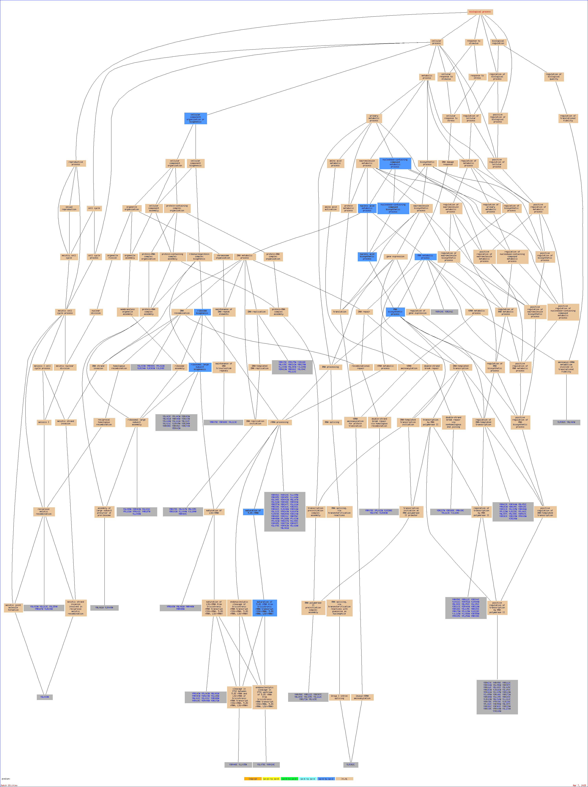

Of your input list, 615 genes are known or unknown but not ambiguous. Identifiers unknown to the annotation provider are still included in the statistics. The total number of genes used to calculate the background distribution of GO terms is 7166. Displaying 14 terms out of a total of 1430 found.
Result Table| Terms from the Process Ontology of gene_association.sgd with p-value <= 0.01 | | Gene Ontology term | Cluster frequency | Genome frequency | Corrected
P-value | FDR | False
Positives | Genes annotated to the term |
|---|
| ribosomal large subunit biogenesis | 30 of 615 genes, 4.9% | 129 of 7166 genes, 1.8% | 0.00041 | 0.00% | 0.00 | YDL063C, YOR048C, YPR143W, YPL043W, YDR083W, YGL099W, YNL061W, YNR046W, YHR040W, YGR103W, YLL035W, YOL144W, YGL078C, YOR063W, YGL111W, YNL002C, YKL021C, YPL131W, YHR088W, YPR102C, YKR024C, YLR009W, YOR294W, YDR496C, YER006W, YHR197W, YLL008W, YDR091C, YOR272W, YER002W | | nucleic acid metabolic process | 216 of 615 genes, 35.1% | 1896 of 7166 genes, 26.5% | 0.00062 | 0.00% | 0.00 | YDR091C, YGL033W, YMR078C, YLR382C, YDR423C, YKR024C, YHR058C, YDR227W, YGR005C, YLL035W, YDL017W, YMR285C, YMR112C, YMR080C, YGR200C, YPR175W, YLR321C, YDR365C, YML094W, YML046W, YKR062W, YPL022W, YLR288C, YIL177C, YMR023C, YLL008W, YDL148C, YOR304W, YER002W, YIR008C, YLR059C, YDL056W, YML080W, YOR145C, YNL147W, YER051W, YDL014W, YPL207W, YDL207W, YDR397C, YDR499W, YBL035C, YOL149W, YLR449W, YBR089C-A, YMR016C, YBL093C, YLR105C, YBR202W, YDL005C, YBR278W, YOR048C, YGL213C, YDR083W, YPR038W, YDR369C, YBL052C, YNR046W, YBL024W, YBR257W, YBR247C, YJL179W, YMR263W, YLR141W, YLR182W, YDR392W, YGL150C, YGL243W, YKL021C, YIL061C, YHR143W-A, YGL111W, YLL067C, YKL018W, YHR070W, YOL124C, YMR239C, YNL113W, YBR195C, YOR310C, YDR026C, YJL065C, YGL112C, YOR243C, YOR213C, YOL144W, YER040W, YBL014C, YKL015W, YHR119W, YHR062C, YCL055W, YLR196W, YDR146C, YJR144W, YOR004W, YHR187W, YHR079C, YGL067W, YMR172W, YNL073W, YPL086C, YJL209W, YHR084W, YDL213C, YGL250W, YOL135C, YLR147C, YHR040W, YDL182W, YBR193C, YDL060W, YBR233W, YPR143W, YLR115W, YBR154C, YLR401C, YKL011C, YLR197W, YLR409C, YLR019W, YML121W, YNL216W, YER041W, YDR280W, YGR103W, YMR167W, YNL215W, YDL074C, YNR009W, YHR069C, YNL178W, YMR179W, YCL067C, YLR234W, YLL004W, YDR225W, YJR082C, YPL129W, YOR201C, YLL010C, YNR054C, YLL066C, YKR038C, YER006W, YNL040W, YBR010W, YOL125W, YFR034C, YLR228C, YHR088W, YGL094C, YNL290W, YBL032W, YPL266W, YAR008W, YPL157W, YJL115W, YCL066W, YGR275W, YOL093W, YFL023W, YPL043W, YNL082W, YHR197W, YJL194W, YKL099C, YGR251W, YDR120C, YLR467W, YPL042C, YNL002C, YOR017W, YBL003C, YKR008W, YDL209C, YOR358W, YNL097C, YJL225C, YDR419W, YOR189W, YML099C, YML015C, YOR281C, YCR042C, YGR095C, YPR025C, YBR060C, YDR520C, YDL070W, YOR272W, YOR308C, YKL059C, YLR383W, YOR363C, YPL254W, YOR229W, YGR074W, YOR294W, YOL094C, YMR039C, YJL208C, YDL013W, YPR009W, YIL161W, YGL130W, YDR381W, YDR087C, YGL078C, YOR063W, YNL317W, YCR106W, YKL113C, YEL026W, YJL164C, YNL061W | | RNA biosynthetic process | 164 of 615 genes, 26.7% | 1362 of 7166 genes, 19.0% | 0.00100 | 0.00% | 0.00 | YPL043W, YFL023W, YOL093W, YCL066W, YGR275W, YJL115W, YPL157W, YAR008W, YPL266W, YHR088W, YGL094C, YFR034C, YLR228C, YER006W, YBR010W, YOL125W, YKR038C, YOR201C, YNR054C, YLL010C, YDR225W, YPL129W, YCL067C, YHR069C, YMR179W, YGR103W, YNR009W, YDL074C, YDR280W, YLR409C, YNL216W, YLR019W, YML121W, YLR197W, YLR401C, YBR154C, YEL026W, YNL061W, YNL317W, YCR106W, YOR063W, YGL078C, YDR087C, YGL130W, YPR009W, YOR294W, YMR039C, YOR229W, YGR074W, YPL254W, YOR363C, YKL059C, YOR272W, YOR308C, YDR520C, YPR025C, YCR042C, YGR095C, YOR281C, YML099C, YML015C, YNL097C, YOR358W, YDL209C, YKR008W, YNL002C, YOR017W, YPL042C, YGR251W, YDR120C, YKL099C, YHR197W, YBR257W, YNR046W, YBL024W, YBL052C, YOR048C, YDR083W, YDL005C, YLR105C, YLR449W, YMR016C, YBR089C-A, YBL093C, YOL149W, YPL207W, YDL207W, YDR397C, YOR145C, YML080W, YDL014W, YER051W, YNL147W, YDL056W, YLR059C, YIR008C, YER002W, YDL148C, YOR304W, YLL008W, YMR023C, YML094W, YML046W, YKR062W, YGR200C, YDR365C, YLR321C, YMR112C, YMR285C, YLL035W, YGR005C, YHR058C, YKR024C, YDR423C, YLR382C, YDR091C, YLR115W, YPR143W, YDL060W, YBR193C, YHR040W, YLR147C, YOL135C, YHR084W, YDL213C, YNL073W, YJL209W, YPL086C, YHR079C, YHR187W, YMR172W, YOR004W, YLR196W, YDR146C, YHR062C, YCL055W, YKL015W, YHR119W, YER040W, YBL014C, YOR213C, YOR243C, YOL144W, YDR026C, YGL112C, YBR195C, YNL113W, YOR310C, YMR239C, YOL124C, YHR070W, YKL018W, YGL111W, YKL021C, YGL243W, YIL061C, YHR143W-A, YGL150C, YDR392W, YMR263W, YLR182W, YLR141W, YBR247C, YJL179W | | nucleobase-containing compound biosynthetic process | 185 of 615 genes, 30.1% | 1591 of 7166 genes, 22.2% | 0.00171 | 0.00% | 0.00 | YBR154C, YLR401C, YLR409C, YNL216W, YLR019W, YML121W, YLR197W, YDR280W, YHR069C, YMR179W, YGR103W, YNR009W, YDL074C, YCL067C, YLR234W, YDR225W, YPL129W, YNR054C, YOR201C, YLL010C, YER006W, YOL125W, YBR010W, YNL333W, YKR038C, YLR228C, YFR034C, YHR088W, YGL094C, YBL032W, YAR008W, YPL266W, YJL115W, YPL157W, YOL093W, YCL066W, YGR275W, YFL023W, YPL043W, YHR197W, YGR251W, YDR120C, YKL099C, YOR017W, YNL002C, YPL042C, YKR008W, YDL209C, YOR358W, YML099C, YML015C, YNL097C, YDR419W, YOR281C, YPR025C, YCR042C, YGR095C, YDR520C, YKL059C, YOR272W, YOR308C, YOR229W, YGR074W, YPL254W, YOR363C, YPR009W, YOR294W, YMR039C, YDR087C, YGL130W, YHR144C, YOR063W, YGL078C, YHL011C, YEL026W, YNL061W, YNL317W, YCR106W, YKL016C, YDR091C, YLR382C, YML106W, YKR024C, YHR058C, YDR423C, YGR005C, YMR285C, YLR359W, YLL035W, YMR112C, YML094W, YDL055C, YML046W, YPL022W, YKR062W, YPR175W, YGR200C, YLR321C, YDR365C, YDL148C, YOR304W, YLL008W, YMR023C, YIR008C, YER002W, YML080W, YOR145C, YDL014W, YER051W, YNL147W, YLR059C, YDL056W, YBL035C, YOL149W, YDL207W, YPL207W, YDR499W, YDR397C, YLR105C, YLR449W, YBL093C, YBR089C-A, YMR016C, YOR048C, YDR083W, YBL068W, YDL005C, YBR278W, YNR046W, YBR257W, YBL024W, YBL052C, YMR263W, YLR182W, YLR141W, YML022W, YBR247C, YJL179W, YGL150C, YDR392W, YGL111W, YGL243W, YKL021C, YLR017W, YHR143W-A, YIL061C, YMR239C, YKL018W, YHR070W, YOL124C, YDR026C, YGL112C, YBR195C, YNL113W, YOR310C, YOR243C, YOR213C, YOL144W, YER040W, YBL014C, YHR062C, YCL055W, YHR119W, YKL015W, YOR004W, YDR146C, YLR196W, YHR079C, YHR187W, YMR172W, YHR084W, YDL213C, YNL073W, YPL086C, YJL209W, YOL135C, YER070W, YLR147C, YKL216W, YHR040W, YNL220W, YDL060W, YBR193C, YPR143W, YLR115W | | nucleic acid biosynthetic process | 172 of 615 genes, 28.0% | 1457 of 7166 genes, 20.3% | 0.00182 | 0.00% | 0.00 | YOR243C, YOR213C, YOL144W, YDR026C, YGL112C, YNL113W, YBR195C, YOR310C, YHR062C, YCL055W, YKL015W, YHR119W, YER040W, YBL014C, YGL150C, YDR392W, YMR263W, YLR182W, YLR141W, YBR247C, YJL179W, YMR239C, YHR070W, YKL018W, YOL124C, YGL111W, YGL243W, YKL021C, YHR143W-A, YIL061C, YDL060W, YBR193C, YHR040W, YLR115W, YPR143W, YHR079C, YHR187W, YMR172W, YOR004W, YLR196W, YDR146C, YLR147C, YOL135C, YHR084W, YDL213C, YNL073W, YPL086C, YJL209W, YMR285C, YLL035W, YGR005C, YML046W, YML094W, YPL022W, YKR062W, YPR175W, YGR200C, YLR321C, YDR365C, YMR112C, YDR091C, YKR024C, YHR058C, YDR423C, YLR382C, YLR105C, YLR449W, YBR089C-A, YMR016C, YBL093C, YBL035C, YOL149W, YDL207W, YPL207W, YDR499W, YDR397C, YNR046W, YBR257W, YBL024W, YBL052C, YOR048C, YDR083W, YBR278W, YDL005C, YIR008C, YER002W, YDL148C, YOR304W, YMR023C, YLL008W, YML080W, YOR145C, YDL014W, YER051W, YNL147W, YLR059C, YDL056W, YML099C, YML015C, YNL097C, YDR419W, YOR358W, YDL209C, YPR025C, YCR042C, YGR095C, YOR281C, YGR251W, YDR120C, YKL099C, YHR197W, YKR008W, YNL002C, YOR017W, YPL042C, YOR063W, YGL078C, YDR087C, YGL130W, YEL026W, YNL061W, YNL317W, YCR106W, YKL059C, YOR308C, YOR272W, YDR520C, YPR009W, YOR294W, YMR039C, YGR074W, YOR229W, YPL254W, YOR363C, YCL067C, YLR234W, YHR069C, YMR179W, YGR103W, YNR009W, YDL074C, YLL010C, YOR201C, YNR054C, YDR225W, YPL129W, YLR401C, YBR154C, YDR280W, YLR409C, YLR019W, YNL216W, YML121W, YLR197W, YOL093W, YCL066W, YGR275W, YJL115W, YPL157W, YFL023W, YPL043W, YLR228C, YFR034C, YER006W, YBR010W, YOL125W, YKR038C, YAR008W, YPL266W, YHR088W, YGL094C, YBL032W | | heterochromatin formation | 29 of 615 genes, 4.7% | 131 of 7166 genes, 1.8% | 0.00197 | 0.00% | 0.00 | YBR202W, YMR080C, YDR225W, YBL052C, YHR119W, YBR060C, YDL074C, YJL065C, YMR179W, YJL115W, YDR026C, YDR227W, YLL004W, YNL097C, YOR213C, YLR285W, YML121W, YOR229W, YNL216W, YBL003C, YJL018W, YDL070W, YOL017W, YMR307W, YLR288C, YOR304W, YMR263W, YER120W, YGL150C | | nucleobase-containing compound metabolic process | 236 of 615 genes, 38.4% | 2144 of 7166 genes, 29.9% | 0.00236 | 0.00% | 0.00 | YLR467W, YPL042C, YNL002C, YOR017W, YKR008W, YBL003C, YHR197W, YJL194W, YKL099C, YGR251W, YDR120C, YOR281C, YCR042C, YGR095C, YBR060C, YPR025C, YOR358W, YDL209C, YNL097C, YJL225C, YDR419W, YOR189W, YML099C, YML015C, YOR363C, YGR074W, YOR229W, YPL254W, YOR294W, YMR039C, YOL094C, YDL013W, YJL208C, YPR009W, YDR520C, YDL070W, YOR308C, YOR272W, YKL059C, YLR383W, YHL011C, YNL317W, YCR106W, YEL026W, YKL113C, YNL061W, YJL164C, YHR144C, YGL130W, YIL161W, YDR381W, YDR087C, YOR063W, YGL078C, YJR069C, YLR197W, YLR409C, YNL216W, YLR019W, YML121W, YER041W, YDR280W, YBR154C, YLR401C, YKL011C, YDR225W, YJR082C, YPL129W, YLL010C, YOR201C, YNR054C, YGR103W, YMR167W, YNR009W, YNL215W, YDL074C, YNL178W, YHR069C, YMR179W, YCL067C, YLL004W, YLR234W, YHR088W, YIR028W, YNL290W, YGL094C, YBL032W, YPL266W, YAR008W, YLL066C, YNL333W, YML126C, YKR038C, YER006W, YOL125W, YNL040W, YBR010W, YNL241C, YLR228C, YFR034C, YFL023W, YPL043W, YNL082W, YPL157W, YJL115W, YCL066W, YGR275W, YOL093W, YGL243W, YLR017W, YKL021C, YHR143W-A, YIL061C, YGL111W, YLL067C, YHR070W, YOL124C, YKL018W, YMR239C, YML022W, YBR247C, YJL179W, YMR263W, YLR182W, YLR141W, YDR392W, YGL150C, YER040W, YBL014C, YHR119W, YKL015W, YHR062C, YCL055W, YNL113W, YBR195C, YOR310C, YDR026C, YGL112C, YJL065C, YOR213C, YOR243C, YOL144W, YNL073W, YJL209W, YPL086C, YHR084W, YDL213C, YGL250W, YOL135C, YLR147C, YER070W, YDR146C, YLR196W, YJR144W, YOR004W, YHR187W, YHR079C, YMR172W, YGL067W, YBR233W, YPR143W, YLR115W, YHR040W, YNL220W, YDL182W, YKL216W, YBR193C, YDL060W, YMR078C, YLR382C, YDR423C, YML106W, YHR058C, YKR024C, YKL016C, YDR091C, YOL056W, YGL033W, YMR112C, YMR080C, YGR200C, YPR175W, YDR365C, YLR321C, YDL055C, YML046W, YML094W, YPL022W, YKR062W, YDR227W, YGR005C, YLR359W, YDL017W, YLL035W, YMR285C, YLR059C, YDL056W, YML080W, YOR145C, YEL042W, YNL147W, YER051W, YDL014W, YJR051W, YLR288C, YIL177C, YMR023C, YLL008W, YDL148C, YOR304W, YER002W, YIR008C, YBR202W, YBR278W, YBL068W, YDL005C, YOR048C, YDR083W, YGL213C, YDR369C, YPR038W, YBL052C, YNR046W, YBR257W, YBL024W, YPL207W, YDL207W, YDR397C, YDR499W, YBL035C, YOL149W, YLR449W, YMR016C, YBR089C-A, YBL093C, YLR105C | | chromatin organization | 78 of 615 genes, 12.7% | 541 of 7166 genes, 7.5% | 0.00279 | 0.00% | 0.00 | YBR028C, YKR024C, YFL066C, YLR285W, YML121W, YNL216W, YER120W, YLR321C, YBL002W, YMR080C, YDR225W, YKL073W, YJR082C, YPL129W, YLL004W, YML102W, YDL017W, YNL215W, YDL074C, YDR227W, YGL180W, YMR179W, YNL030W, YJL018W, YBL032W, YDL014W, YER051W, YEL077C, YFR034C, YIL177C, YLL066C, YLR288C, YOR249C, YLL008W, YOR304W, YBR010W, YBL052C, YBR202W, YGR275W, YLR449W, YHR135C, YBR089C-A, YDR499W, YCL024W, YJL115W, YKR008W, YBL003C, YIL113W, YMR239C, YNL183C, YLR467W, YLL067C, YDR392W, YGL150C, YDR466W, YMR263W, YLR141W, YHR119W, YBR060C, YJL225C, YOR213C, YNL097C, YBR195C, YDR026C, YJL065C, YGL112C, YJL106W, YPL209C, YOR229W, YPL254W, YHR079C, YBR009C, YMR307W, YOL017W, YDL070W, YJL128C, YGL078C, YPR204W | | maturation of 5.8S rRNA from tricistronic rRNA transcript (SSU-rRNA, 5.8S rRNA, LSU-rRNA) | 23 of 615 genes, 3.7% | 93 of 7166 genes, 1.3% | 0.00333 | 0.00% | 0.00 | YOR294W, YKR024C, YDR280W, YHR088W, YKL021C, YLR059C, YOR145C, YNL002C, YOR272W, YKL099C, YGR251W, YBR247C, YDL148C, YOR004W, YGR095C, YNR054C, YOR048C, YPR143W, YLL035W, YGL078C, YGR103W, YOR310C, YHR069C | | maturation of 5.8S rRNA | 23 of 615 genes, 3.7% | 94 of 7166 genes, 1.3% | 0.00406 | 0.00% | 0.00 | YDL148C, YOR004W, YBR247C, YGR251W, YOR272W, YKL099C, YOR145C, YNL002C, YHR088W, YKL021C, YLR059C, YDR280W, YKR024C, YOR294W, YHR069C, YGR103W, YOR310C, YGL078C, YLL035W, YOR048C, YPR143W, YNR054C, YGR095C | | cellular component organization or biogenesis | 270 of 615 genes, 43.9% | 2538 of 7166 genes, 35.4% | 0.00486 | 0.00% | 0.00 | YGL075C, YGL049C, YEL026W, YMR260C, YLR319C, YGL078C, YOR063W, YLR213C, YMR039C, YOL094C, YJL208C, YDL013W, YGR074W, YGL002W, YOR272W, YDL070W, YOL017W, YMR307W, YGR095C, YBR060C, YLR300W, YGR181W, YDR419W, YJL225C, YML015C, YDL240W, YLL031C, YLR440C, YBR091C, YMR032W, YMR055C, YBL003C, YBR235W, YNL183C, YPL131W, YNL002C, YPL269W, YOR257W, YHR197W, YGL099W, YFL023W, YPL043W, YGR275W, YPL157W, YJL115W, YPL266W, YJL018W, YBL032W, YNL329C, YHR088W, YKR038C, YBR010W, YNR054C, YBL002W, YPL129W, YJR082C, YLL004W, YNL215W, YNL169C, YNL178W, YDR496C, YDR280W, YLR409C, YLL025W, YLR332W, YGR223C, YLL009C, YIL016W, YBR233W, YIR010W, YDL142C, YPR204W, YDL060W, YER036C, YOR037W, YNL087W, YHR079C, YBR009C, YLR196W, YKL015W, YHR119W, YNL090W, YER025W, YOR243C, YOR213C, YDL212W, YOR310C, YJL065C, YKL143W, YCR068W, YKL021C, YGL111W, YJL083W, YJL179W, YER072W, YDR083W, YGL213C, YOR048C, YBR089C-A, YCR061W, YDR499W, YCL024W, YDL207W, YJR070C, YBL035C, YNL175C, YOL069W, YLR059C, YER051W, YOR145C, YIL177C, YOR249C, YML046W, YMR112C, YMR080C, YLL035W, YML102W, YMR285C, YOL147C, YDR227W, YBR028C, YKR024C, YHR143W, YNL283C, YGL033W, YGL097W, YNL061W, YJL164C, YDL139C, YKL113C, YNL188W, YLR413W, YJL128C, YDR087C, YIL106W, YOR294W, YGL212W, YPL254W, YOR229W, YOR308C, YHL046C, YDR233C, YNL097C, YOR189W, YFL020C, YKR008W, YLR009W, YIL113W, YDR361C, YLR467W, YKL099C, YGR251W, YJL194W, YKL165C, YMR138W, YBR158W, YHL034C, YOR106W, YLR336C, YFR034C, YNR067C, YLL066C, YER006W, YKL089W, YOR201C, YKL073W, YDR225W, YLR234W, YDL074C, YMR167W, YGR103W, YMR179W, YHR069C, YFL066C, YGL003C, YLR197W, YNL216W, YBR038W, YML121W, YIR024C, YKL011C, YHR127W, YFR039C, YBR154C, YOR058C, YPR143W, YOR276W, YDR375C, YPL124W, YHR040W, YLR127C, YPL112C, YLR147C, YJL106W, YPL209C, YNL066W, YPR163C, YDL213C, YGL250W, YHR084W, YMR172W, YOR094W, YDR146C, YOR004W, YJR144W, YCL055W, YHR062C, YML104C, YGR112W, YDL063C, YOL144W, YMR305C, YBR195C, YNL113W, YGL112C, YDR026C, YKL018W, YMR239C, YPR102C, YHR143W-A, YLR355C, YLL067C, YDR392W, YGL150C, YBR247C, YDR466W, YLR182W, YLR141W, YMR263W, YBL052C, YDR369C, YBR257W, YNR046W, YER118C, YDL005C, YBR202W, YHR060W, YHR135C, YBL093C, YLR449W, YDR397C, YOL018C, YNL030W, YNL147W, YDL014W, YER002W, YEL077C, YLL008W, YLR288C, YHR170W, YOR304W, YDL148C, YDR365C, YLR321C, YPL022W, YML094W, YCL005W, YDL017W, YDR456W, YNL313C, YGL180W, YHR058C, YJL030W, YGR108W, YLR285W, YMR078C, YDR091C, YLR380W, YPR141C, YER120W | | negative regulation of gene expression, epigenetic | 29 of 615 genes, 4.7% | 137 of 7166 genes, 1.9% | 0.00515 | 0.00% | 0.00 | YLR285W, YOR229W, YNL216W, YML121W, YBL003C, YJL018W, YOL017W, YMR307W, YLR288C, YDL070W, YMR263W, YER120W, YOR304W, YGL150C, YBR202W, YDR225W, YMR080C, YBL052C, YHR119W, YBR060C, YDL074C, YJL115W, YDR227W, YDR026C, YMR179W, YJL065C, YOR213C, YNL097C, YLL004W | | RNA metabolic process | 174 of 615 genes, 28.3% | 1505 of 7166 genes, 21.0% | 0.00617 | 0.00% | 0.00 | YLR059C, YDL056W, YOR145C, YML080W, YNL147W, YER051W, YDL014W, YER002W, YIR008C, YLL008W, YMR023C, YDL148C, YOR304W, YBL052C, YNR046W, YBL024W, YBR257W, YDL005C, YOR048C, YGL213C, YDR083W, YLR449W, YBL093C, YBR089C-A, YMR016C, YLR105C, YPL207W, YDL207W, YDR397C, YOL149W, YDR423C, YKR024C, YHR058C, YLR382C, YDR091C, YGR200C, YLR321C, YDR365C, YML094W, YML046W, YKR062W, YMR112C, YMR080C, YLL035W, YMR285C, YGR005C, YOL135C, YLR147C, YNL073W, YPL086C, YJL209W, YHR084W, YDL213C, YHR187W, YHR079C, YMR172W, YGL067W, YDR146C, YLR196W, YOR004W, YLR115W, YBR233W, YPR143W, YBR193C, YDL060W, YHR040W, YHR070W, YKL018W, YOL124C, YMR239C, YKL021C, YGL243W, YIL061C, YHR143W-A, YGL111W, YDR392W, YGL150C, YBR247C, YJL179W, YMR263W, YLR182W, YLR141W, YHR119W, YKL015W, YHR062C, YCL055W, YER040W, YBL014C, YOR213C, YOR243C, YOL144W, YNL113W, YBR195C, YOR310C, YDR026C, YGL112C, YPL266W, YAR008W, YHR088W, YGL094C, YBL032W, YLR228C, YFR034C, YKR038C, YER006W, YOL125W, YNL040W, YBR010W, YFL023W, YPL043W, YCL066W, YGR275W, YOL093W, YPL157W, YJL115W, YDR280W, YLR197W, YLR409C, YML121W, YLR019W, YNL216W, YLR401C, YBR154C, YLL010C, YOR201C, YNR054C, YDR225W, YPL129W, YCL067C, YGR103W, YDL074C, YNR009W, YHR069C, YNL178W, YMR179W, YOR294W, YMR039C, YJL208C, YPR009W, YOR363C, YPL254W, YOR229W, YGR074W, YOR308C, YOR272W, YKL059C, YDR520C, YNL317W, YCR106W, YKL113C, YEL026W, YNL061W, YOR063W, YGL078C, YIL161W, YGL130W, YDR087C, YKR008W, YPL042C, YNL002C, YOR017W, YKL099C, YGR251W, YDR120C, YHR197W, YCR042C, YGR095C, YPR025C, YOR281C, YNL097C, YML099C, YML015C, YOR358W, YDL209C | | ribosome biogenesis | 71 of 615 genes, 11.5% | 492 of 7166 genes, 6.9% | 0.00821 | 0.00% | 0.00 | YDL213C, YOR294W, YLR196W, YOR004W, YOR308C, YOR272W, YPR143W, YNL061W, YEL026W, YHR040W, YDR087C, YER036C, YOR063W, YGL078C, YDL060W, YHR143W-A, YPL131W, YKL021C, YGL111W, YNL002C, YLR009W, YMR239C, YPR102C, YDR361C, YBR247C, YHR197W, YKL099C, YGR251W, YDL063C, YGR095C, YHR062C, YOR310C, YNL113W, YKL143W, YOL144W, YOR243C, YLR059C, YHR088W, YDL014W, YNL147W, YOR145C, YPL266W, YLL008W, YHR170W, YDL148C, YER006W, YLR336C, YER002W, YFL023W, YDR083W, YPL043W, YOR048C, YBR257W, YNR046W, YGL099W, YLR197W, YLR409C, YDR496C, YKR024C, YDR280W, YGL097W, YBR154C, YDR091C, YDR365C, YOR201C, YNR054C, YGR103W, YNL178W, YHR069C, YLL035W, YMR285C |
Of your input list, 615 genes are known or unknown but not ambiguous. Identifiers unknown to the annotation provider are still included in the statistics. The total number of genes used to calculate the background distribution of GO terms is 7166. Displaying 14 terms out of a total of 1430 found.
Nodes in the graph are color-coded according to their p-value. Genes in the GO tree are associated with the GO term(s) to which they are directly annotated. To control the graph size, only significant hits with a p-value <= 0.01 and terms descended from them are included.

|
|


{kind=link}
{kind=link}